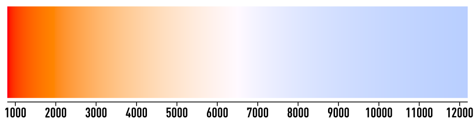
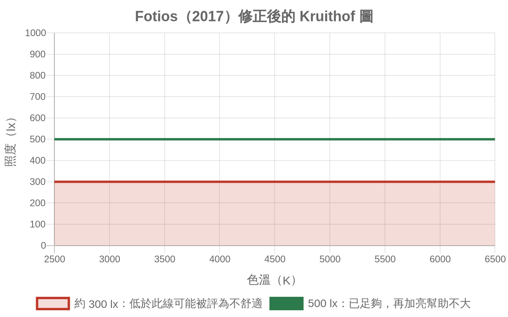

1941 年 Kruithof 畫出一張「多亮的光要配多暖或多冷的色溫才舒服」的圖，室內設計界引用了八十年；後來可信的實驗大多找不到這個關係，比較一致的結果只有一條：太暗會讓人不舒服。今天要練習把「亮度」和「色溫」當成兩顆分開的旋鈕來看。
史料（依二手文獻：Fotios 2017 轉載 Kruithof 原圖說）
1941 年，荷蘭 Philips 公司的 A. A. Kruithof 在公司刊物《Philips Technical Review》第 6 卷發表〈Tubular luminescence lamps for general illumination〉，主題是當時剛推出的管狀螢光燈。文章裡的第 10 圖只有兩條平滑的曲線，橫軸是色溫，縱軸是照度。兩條線之間的區域，就是他說的「令人愉快」的照明。
整個實驗怎麼做，Kruithof 只寫在那張圖的圖說裡。低色溫的部分，他在一個房間裡把白熾燈的電流調低、增減燈的數量，在 80 公分高的桌面上量照度。高色溫的部分，用的是日光本身和他要介紹的日光色螢光燈。上方那條線到了高色溫區是外推出來的，依據是：直射陽光（他寫 5000 K）就算亮到一萬甚至十萬 lux，也沒有人覺得顏色不自然。實驗在實驗室房間做，他補了一句：在家具和牆面顏色淺的客廳，界線大致相同。
這張圖後來被叫做「Kruithof 曲線」。2017 年英國雪菲爾大學的 Steve Fotios 在回顧文章裡引用另一位研究者 Cuttle（2015）的話，說燈光設計師至今提到它時仍帶著敬意。
色溫是什麼
色溫用絕對溫度 K 來描述光的顏色傾向：把一個理想的黑體加熱，溫度低時發出偏紅橙的光，溫度越高越偏白、再偏藍（見圖 1）。燈泡包裝上的 2700 K、3000 K 看起來黃暖，6500 K 看起來白中帶藍。白熾燈的色溫低，Kruithof 那張圖的左半段就是用它做的。

圖 1｜黑體在不同溫度下發出的光色，橫軸單位為 K。來源：Bhutajata，Color temperature black body 800-12200K，2015。授權：CC BY-SA 4.0，來源頁面
Kruithof 的主張（實證研究，原始資料未發表；依二手文獻 Fotios 2017）
每一種色溫都有一個照度的下限和上限。低於下限，低色溫的光顯得昏暗，高色溫的光顯得冷；高於上限，物體的顏色看起來不自然。照這個說法，暖色光適合低照度，冷白光必須夠亮才舒服，昏暗又偏藍的房間會讓人不舒服。
後續檢驗（實證研究）
Fotios 在〈A Revised Kruithof Graph Based on Empirical Data〉（LEUKOS 13 卷，2017）逐項列出原始報告缺了什麼：沒有說明看過哪些色溫與照度組合，沒有說受試者怎麼作答、有幾個人，沒有平均值、變異量或統計分析，圖上也沒有任何資料點，只有平滑化又外推的曲線。他的判斷是：這樣的報告今天大概過不了同儕審查，因此不宜把那兩條線當成依據。
反證其實很早就有。1990 年有兩篇實驗：Boyce 與 Cuttle 發表在《Lighting Research and Technology》，Davis 與 Ginthner 發表在北美照明工程學會的期刊。兩篇都報告結果不支持 Kruithof。依 Fotios 的轉引，Davis 與 Ginthner 發現偏好評分只受照度影響；Boyce 與 Cuttle 則說，受試者完全適應之後，2700 K 到 6300 K 之間、演色性良好的燈，對房間印象的影響很小。（這兩篇依二手文獻：Fotios 2017。）
Fotios 接著找到 29 篇檢驗類似關係的研究，依國際照明委員會（CIE）2014 年的研究方法建議篩選，例如場景是否隨機排序、有沒有統計分析，最後認定 9 篇可信。這 9 篇裡，5 篇結論不支持 Kruithof，1 篇部分支持，3 篇看不出明確答案。他把其中 8 篇的資料重新畫在一起，得到三個趨勢：
所以他提議把 Kruithof 圖改成只有一條約 300 lux 的水平線，線下標為可能不舒服，線上為大致可接受（見圖 2）。色溫可以依其他理由去選。

圖 2｜Fotios 提議的修正版 Kruithof 圖：色溫不再決定舒適與否，只剩照度的下限。示意，依論文結論繪製，非原始實測數據點。來源：本課程依 Fotios, A Revised Kruithof Graph Based on Empirical Data, LEUKOS, 2017 繪製。授權：本課程自製，來源頁面
這個結論也有範圍。9 篇可信研究都用評分量表，只有 4 篇在真的房間裡做，其他用的是縮小比例的模型房間；資料只談室內，不談戶外。2019 年 Veitch、Fotios 與 Houser 在同一本期刊發表〈Judging the scientific quality of applied lighting research〉，乾脆拿 Kruithof 1941 年的論文當教材，示範審稿人會怎麼評估一篇照明研究。
日常情境：晚上的客廳（實證研究的應用，示範用）
Kruithof 自己說，他的界線在淺色家具的客廳也成立。那就拿客廳來試。想像一個常見的台灣客廳：天花板一盞 6500 K 的白光吸頂燈，沙發旁一盞 3000 K 的立燈。晚上只開立燈看書，大家會說「很溫馨」；只開一半亮度的白光吸頂燈，大家會說「冷冷的、像診所」。
照 Kruithof 的圖，這個差別來自色溫和照度配錯了：白光必須夠亮。照 Fotios 整理的證據，要先問另一件事：兩種情況下，書本和桌面到底有多亮？立燈離書很近，桌面的照度可能不低；半亮的吸頂燈從兩公尺高照下來，落到桌面的光可能已經掉到 300 lux 以下。讓人皺眉的也許是暗，色溫只是最先被注意到、最容易說出口的那個特徵。
這會改變設計的順序。第一步，確認人真正在做事的平面（Kruithof 量的是 80 公分高的桌面）夠亮，Fotios 的數字是至少避開 300 lux 以下、500 lux 左右就夠。第二步，才依其他理由選色溫：木頭、布料、皮膚在哪種光下看起來對；同一個視野裡的燈要不要統一色溫，免得像上一堂 Albers 的色塊那樣互相拉扯；夜裡想要什麼氣氛。
還有適應的問題。Boyce 與 Cuttle 的結論加了一個條件：受試者要完全適應。Fotios 也把各研究適應時間長短不同，列為結果不一致的可能原因之一。剛從走廊踏進白光房間的那幾秒，冷的感覺最強；坐十五分鐘後再評一次，答案可能不同。替客廳選燈時，在店裡看一眼和在家裡住一晚，判斷的是兩種狀態。
經典理論：Stanley McCandless《A Method of Lighting the Stage》（初版 1932；本課查核的是 1947 年第三版）
劇場燈光不追求「舒適」，色溫差異反而被刻意拿來用。McCandless 在書中主張，每個表演區從觀眾視角的兩條對角線各打一盞燈，光的方向沿著立方體的對角線，平面與立面都約 45 度，演員的臉才有立體感（見圖 3）。
顏色怎麼配？他寫：與「動機光源」（例如劇情裡從左邊窗戶照進來的陽光）同方向的那一側燈可以較亮，用白光或琥珀色；另一側較暗，用白光或冷色。理由來自日常觀察：陽光是暖的，陰影裡卻帶著天空的藍。他也提醒，打在演員臉上的顏色只該是略偏白的淡色，琥珀、粉紅、淡紫、鋼青，除了特殊效果，避免純綠、純藍、純紅。
圖 3｜McCandless 的表演區打光：兩側對角線入射，一暖一冷。來源：本課程依 McCandless, A Method of Lighting the Stage, 第三版, 1947, 頁 50–57 繪製。授權：本課程自製，來源頁面
拿來和 Kruithof 對照，劇場關心的是同一個瞬間裡兩種色溫的「差」：哪一邊暖，就告訴觀眾光從哪裡來、現在是白天還是傍晚。Kruithof 的圖只處理整間房間一種色溫的情況，這種並置的效果它根本沒有討論。1947 年版明確寫了一暖一冷的做法；1932 年初版是否已有同樣建議，本課未能查核。
誤解一：Kruithof 曲線是經過驗證的設計規則。已被反駁：Boyce 與 Cuttle（1990）、Davis 與 Ginthner（1990）的實驗都不支持它，Fotios（2017）回顧 9 篇可信研究後，也只留下「避免低照度」一條。Fotios 指出它至今仍被廣泛當作設計規則引用，而原始報告裡沒有任何可供重算的資料。
誤解二：暖光一定讓人放鬆，冷光一定讓人專心。在「舒適」「明亮」這類主觀評分上，可信研究顯示 2500 K 到 6500 K 之間的色溫影響可以忽略。生理反應是另一個題目：Fotios 在同一篇文章提到，光的時間、強度、持續長短和波長會影響晝夜節律，並列舉了血壓、心率等研究，但他把這些歸為仍需釐清的問題，不能拿來當成「冷光提神」的定論。
誤解三：既然色溫不影響舒適，色溫就不重要。Fotios 說的是色溫「可以依其他標準選擇」。Boyce 與 Cuttle 的結論也只適用於演色性良好的燈。顏色看起來對不對、同一空間的燈是否一致、劇場那種刻意的冷暖對比，都還是色溫要回答的問題。
看（5 分鐘）
今晚回家，挑兩個燈色不同的房間（例如白光的廚房和黃光的臥室）。一進門先寫下第一個形容詞，在房裡待 2 分鐘後再寫一個。比較兩個詞有沒有變。
做（10 分鐘）
在一張桌子上放一本打開的書，把兩顆旋鈕分開轉：
在紙上畫一個小表格：列是「近／遠」，欄是「暖／冷」，把分數填進去，並寫下你試的先後順序。
回顧（5 分鐘）
來源 | 來源類型 | 查核日期 |
Steve Fotios, A Revised Kruithof Graph Based on Empirical Data, LEUKOS 13(1): 3–17, 2017（全文含 Kruithof 1941 第 10 圖圖說轉載） | 實證研究（回顧） | 2026-11-24 |
A. A. Kruithof, Tubular luminescence lamps for general illumination, Philips Technical Review 6(3): 65–73, 1941（原刊未能開啟，內容依 Fotios 2017） | 史料／實證研究（依二手文獻） | 2026-11-24 |
P. R. Boyce & C. Cuttle, Effect of correlated colour temperature on the perception of interiors and colour discrimination, Lighting Research and Technology 22(1): 19–36, 1990；R. G. Davis & D. N. Ginthner, Correlated color temperature, illuminance level and the Kruithof curve, Journal of the Illuminating Engineering Society, 1990（皆依 Fotios 2017 轉引） | 實證研究（依二手文獻） | 2026-11-24 |
J. A. Veitch, S. A. Fotios & K. W. Houser, Judging the scientific quality of applied lighting research, LEUKOS 15(2–3): 97–114, 2019 | 實證研究（方法論） | 2026-11-24 |
Stanley McCandless, A Method of Lighting the Stage, 第三版, New York: Theatre Arts, 1947（初版 1932） | 經典理論 | 2026-11-24 |
圖 1 授權頁：Color temperature black body 800-12200K.svg（CC BY-SA 4.0） https://commons.wikimedia.org/wiki/File:Color_temperature_black_body_800-12200K.svg | 圖片授權 | 2026-11-24 |